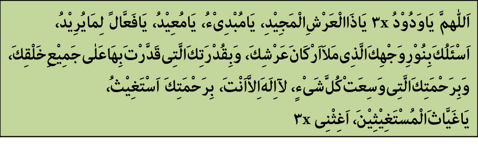

Nilai Ismul A'zham
Jumat, 13 Maret 2015 00:20
Oleh: KH Husin Naparin
Pada zaman dahulu, di Irak terdapat sebuah negara bernama Ninawa, di tepi sungai Dajlah, Mesopotamia atau dekat kota Mosul sekarang. Negeri ini dikuasai oleh bangsa Persia beratus-ratus tahun lamanya. Penduduknya hidup dalam kebodohan dan kegelapan, berpaling dari menyembah Allah SWT kepada penyembahan berhala yang mereka anggap sebagai Tuhan.
Berhala-berhala itu pada setiap tahunnya terus bertambah sesuai dakwaan mereka; ada tuhan kebaikan dan kejahatan, ada tuhan cahaya (terang) dan gelap, ada tuhan kesuburan, tuhan kemarau dan kekeringan.
Para penguasa memanfaatkan kebodohan umat, mengaku bahwa mereka adalah keturunan (anak) Tuhan, sehingga harus dihormati dan disembah. Rakyat hidup dalam kemiskinan karena hasil usaha mereka dipersembahkan kepada berhala dan keturunan tuhan, jika tidak mereka akan mendapat murka.
Diutuslah seorang nabi yaitu Yunus bin Matta. Ia berusaha memberikan pemahaman kepada mereka, bahwa Tuhan adalah Allah pencipta alam semesta dan pemberi rezeki, bukan berhala-berhala itu.
Namun mereka tidak mempercayai, karena Tuhan yang diserukan itu tidak bisa dilihat. Suatu ketika pernah Nabi Yunus AS menyaksikan seorang perempuan menangis tidak bisa memberi makan anak-anaknya karena bahan makanan dibawa oleh suaminya untuk dipersembahkan kepada berhala.
Nabi Yunus AS berusaha menghalanginya namun diusir secara kasar, ia hanya bisa berdoa semoga mereka mendapat hidayah Allah.
Sudah 33 tahun Nabi Yunus AS berdakwah, hanya dua orang yang beriman, itupun secara sembunyi-sembunyi. Nabi Yunus AS. berdoa agar umat ini dihancurkan saja seperti kaum kafir sebelumnya.
Datanglah Jibril AS mempertanyakan, mengapa Nabi Yunus AS sampai berdoa demikian? Ia menjawab, karena keimanan sudah tidak bisa diharapkan lagi. Jibril as meminta Yunus as untuk bersabar 40 hari lagi, jika mereka tidak beriman maka azab akan diturunkan. Nabi Yunus AS kembali berdakwah, tetapi Nabi Yunus AS ditangkap dan dibawa ke hadapan raja untuk diadili.
Raja bertanya, "Siapakah tuhanmu?"
Yunus menjawab, "Allah, pencipta dan pemberi rezeki".
Raja berkata lagi, "Bukankah berhala-berhala itu?"
Nabi Yunus AS menjawab, "Bukan, karena berhala-berhala itu menerima sesembahan dan rezeki sedangkan Tuhanku adalah pemberi rezeki".
Raja berkata pula, "Mampukah Tuhanmu membelamu dari siksaku?"
Nabi Yunus AS menjawab, "Mampu, kalau ia menghendaki".
Raja pun memerintahkan petugas untuk menyiksa Nabi Yunus AS sehingga badannya koyak, darahnya mengucur dan ia pingsan.
Orang-orang tertawa mengolok-oloknya karena Tuhan Nabi Yunus AS tidak mampu mempertahankannya dari siksa raja. Setelah itu, mereka pun pulang ke tempat pekerjaan mereka masing-masing.
Di tengah malam Nabi Yunus AS diselamatkan oleh dua orang pengikutnya. Ia dibawa keluar kota untuk diobati. Adapun rakyat mengira jasad Nabi Yunus AS lenyap dihancurkan oleh berhala. Setelah Nabi Yunus as sembuh, ia kembali berdakwah sampai malam ke-40. Pada malam itu, Nabi Yunus AS meninggalkan negeri Ninawa karena yakin akan turunnya azab.
Betul saja, besoknya muncullah awan hitam di atas negeri itu, nyala api sambar menyambar kesana kemari dan bangun-bangunan menjadi hitam. Semua penduduk keluar rumah mencari Nabi Yunus AS untuk bertaubat; tetapi mereka tidak menemukannya.
Betul saja, besoknya muncullah awan hitam di atas negeri itu, nyala api sambar menyambar kesana kemari dan bangun-bangunan menjadi hitam. Semua penduduk keluar rumah mencari Nabi Yunus AS untuk bertaubat; tetapi mereka tidak menemukannya.Dua pengikut Nabi Yunus AS mengajak umat untuk berdoa dan bertaubat dengan ucapan, Yaa hayyu yaa qayyuum, hiina laa hayya ghairuka, laa ilaha illa anta wa laa ilaha ghairuka. Awan pekat dan angin panas ternyata menghilang, rupanya taubat mereka diterima Allah SWT.
Demikian satu-satunya bangsa yang selamat dari siksa Allah, sebagaimana Dia abadikan dalam firman-Nya yang artinya "dan mengapa tidak ada (penduduk) suatu kota yang beriman, lalu imannya itu bermanfaat kepadanya selain kaum Yunus? Tatkala mereka (kaum Yunus itu),beriman, Kami hilangkan dari mereka azab yang menghinakan dalam kehidupan dunia, dan Kami beri kesenangan kepada mereka sampai kepada waktu yang tertentu" (QS Yunus: 98).
Diterimanya taubat mereka, karena mereka memanggil nama Allah yaitu Al-Hayyu dan Al-Qayyum. Kedua nama inilah yang disebut dengan ismul a'zham (nama yang paling agung), sebagaimana riwayat Imam Ahmad. Terakhir, doa ini disingkat menjadi Yaa Hayyu Yaa Qayyum Laa ilaha illa Anta yang dibaca sebanyak 40 kali antara adzan dan iqamat salat Subuh (I'anah ath-Thalibin, Juz I, h. 286).
Negeri ini perlu banyak orang yang pandai menyeru Allah lewat ismul a'zham (nama-Nya yang Agung ini); diharapkan terlepas dari segala macam malapetaka dan problema.